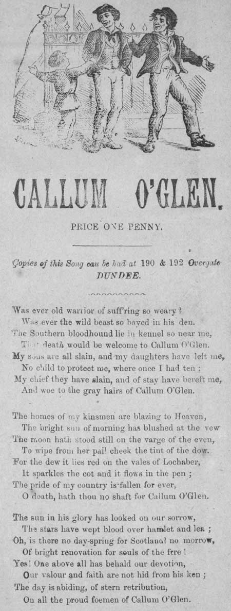

The 2 "Callum-a-Glen" melodies in Hogg's "Jacobite Relics"
To the tune:
"It is a pity that I have too much hand in these songs from the Gaelic to speek of them as I feel. And though this one is endebted to me for the rhyme, I could take it against any piece of modern poetry.
I see that my friend Stenhouse
(who wrote notes to the 1853 edition of the
"Scots Musical Museum"
)
has changed the air to which I set it...for an Irish one. And unluckily the song has an original of its one, bearing the same name. It is to be found in the Fraser Collection."
This comment by Hogg in his "Jacobite Relics, 2nd Series, 1821, hints at 3 tunes:
2°
"Irish" tune set by Stenhouse
to the same text. Scottish air "Malcolm of the Glen" or "Callum a Ghlinne" from Morison's "Highland Airs and Quicksteps", Vol. 2), c. 1882; No. 18, pg. 9. (possibly!).
4°
Another version
of the same tune is found in the Patrick McDonald Collection, first published 1784. (N°144 p.43)
and 2 texts:
- A Gaelic original (see below)
- An English translation rhymed by Hogg.
If the Gaelic original is the text quoted hereafter, then Hogg's text is by no means a translation thereof, but a genuine original poem by the Shepherd of Ettrick. (See Hogg's note to
"McLean's Welcome"
about the meaning of "From the Gaelic").
The lyrics found in Hogg's "Jacobite Relics" were also circulated as a "Broadside" ballad by the "Dundee Poets Box" .
Tunes sequenced by Christian Souchon
A propos de la mélodie
"Quel dommage que je me sois autant impliqué dans la traduction des chants gaéliques: cela m'interdit de dire tout le bien que j'en pense. Bien que le présent chant ait été mis en vers par mes soins, je l'échangerais contre n'importe quel poème moderne.
Je remarque que mon ami Stenhouse
[qui rédigea des notes pour l'édition 1853 du
"Scots Musical Museum"
]
a remplacé l'air dont je l'avais accompagné... par un air irlandais. Il se trouve que malheureusement le chant se chantait sur un timbre original portant le même titre. On le trouvera dans le recueil de Fraser."
Ce commentaire de Hogg ("Jacobites Relics", 2ème série,1821), évoque 3 mélodies:
2°
Morceau "irlandais" de Stenhouse
accompagnant le même texte; peut-être le Scottish air "Malcolm of the Glen" ou "Callum a Ghlinne" tiré des "Highland Airs and Quicksteps", Vol. 2, vers 1882, No. 18, pg. 9, de Morison (c'est une hypothèse!);
4° dont on trouve une
Autre version
dans le recueil de Patrick McDonald, paru en 1784. (N°144 p.43)
ainsi que 2 textes:
-un original en gaélique (cf. plus loin),
-une traduction anglaise mise en vers par Hogg.
Si l'original gaélique est le texte cité ci-après, le morceau fourni par Hogg n'en est en aucun cas la simple traduction. Il s'agit au contraire d'un véritable poème original du berger d'Ettrick. (Cf. la note de Hogg à la page
"McLean's Welcome"
pour le sens qu'il donne à l'expression "Transcrit du gaélique".)
Les paroles de Hogg furent aussi diffusées sous forme de feuille volante ("broadside") par la "Boîte aux Poètes" de Dundee.
Mélodies séquencées par Christian Souchon
1. Was ever old warrior of suffering so weary?
Was ever the wild beast so bayed in his den.
The Southern bloodhound lie in kennel so near me,
The death would be welcome to Callum O'glen.
My sons are slain and my daughters have left me,
No child to protect me, where once I had ten ;
My chief they have slain, and of stay have bereft me,
And woe to the grey hairs of Callum O'Glen.
2. The homes of my kinsmen are blazing to heaven,
The bright sun of morning has blushed at the view
The moon hath stood still on the verge of the even,
To wipe from her pale cheek the tint of the dew.
For the dew it lies red on the vales of Lochaber,
It sparkles the cot and it flows in the pen ;
The pride of my country is fallen for ever,
O death, hath thou no shift for Callum O'Glen?
3. The sun in his glory has looked on our sorrow,
The stars have wept blood over hamlet and lea ;
Oh, is there no day-spring for Scotland no morrow
Of bright renovation for souls of the free ?
Yes! One above all has beheld our devotion,
Our valour and faith are not hid from his ken ;
The day is abiding, of stern retribution,
On all the proud foemen of Callum O'Glen.
PRICE ONE PENNY.
copies of this Song may be had at 190 & 192 Overgate
DUNDEE.

1. Vit-on un fauve ainsi traqué dans sa tanière?
Vit-on jamais ancien guerrier si démuni?
La mort, Malcolm du Glen, serait hospitalière.
Les molosses saxons sont tout près, au chenil.
Mes fils morts, mes filles m'ont quitté pour toujours.
Plus un seul pour m'aider des dix enfants que j'eus.
On immola mon chef qui me portait secours.
Malheur, Malcolm du Glen, à ta tête chenue!
2. Le ciel s'embrase de l'incendie de nos fermes.
Le soleil du matin sombre sous la fumée.
La lune hier a mis à son parcours un terme
Pour essuyer son front empourpré de rosée.
Car dans tout Lochaber une rosée sanglante
Scintille sur les murs, s'écoule des abris.
Mon altière patrie n'est que ruines fumantes.
Mort! Pour Malcolm du Glen, un linceul, je te prie!
3. Le soleil éclatant a fui notre misère,
Les astres pour nos prés ont des larmes de sang.
Ecosse, a-t-on tari ta source de lumière?
Mourras-tu, privé d'âme, O peuple des puissants?.
Comme nos reins, là-haut Quelqu'un sonde nos âmes
Sachant la foi, la vertu dont elles sont pleines..
Il voudra rétribuer comme il convient l'infâme,
L'arrogant adversaire de Malcolm du Glen.
Prix: Un penny
On peut acheter des copies du chant aux 190 et 192 Overgate
à DUNDEE
(Trad. Ch.Souchon(c)2006)
"The Dundee Poets’ Box"
was in operation from about 1880 to 1945, though it is possible that some material was printed as early as the 1850s. Most of the time it had premises at various addresses in Overgate. In 1885 the proprietor J.G. Scott (at 182 Overgate) had published a catalogue of 2,000 titles consisting of included humorous recitations, dialogues, temperance songs, medleys, parodies, love songs, Jacobite songs. Another proprietor in the 1880s was William Shepherd, but little is known about him. Poets’ Box was particularly busy on market days and feeing days when country folk were in town in large numbers. Macartney specialised in local songs and bothy ballads. Many Irish songs were published by the Poets’ Box – many Irishmen worked seasonally harvesting potatoes and also in the jute mills. In 1906 John Lowden Macartney took over as proprietor of the Poet’s Box, initially working from 181 Overgate and later from no.203 and 207.
It is not clear what the connection between the different Poet’s Boxes were. They almost certainly sold each other’s sheets. It is known that John Sanderson in Edinburgh often wrote to the Leitches in Glasgow for songs and that later his brother Charles obtained copies of songs from the Dundee Poet’s Box.
There was also a Poet’s Box in Belfast from 1846 to 1856 at the address of the printer James Moore, and one at Paisley in the early 1850s, owned by William Anderson."
Source: Broadside Collection - National Library of Scotland
Probable period of publication: 1880-1900 shelfmark: L.C.Fol.70(87b)
"La 'Boîte à poètes de Dundee"
a publié des œuvres depuis 1880 environ jusqu'à 1945, mais il se peut que certaines remontent même à 1850. Ses locaux se situaient le plus souvent dans la rue Overgate. En 1885 le propriétaire J.G. Scott (182 Overgate) publia un catalogue de 2000 titres comprenant des récits humoristiques, des dialogues, des chants contre l'abus d'alcool, des pots-pourris, des parodies, des romances et des chants Jacobites. Un autre propriétaire dans les années 1880, William Shepherd, n'a rien laissé de mémorable. La 'Boîte à poètes' faisait surtout recette les jours de marché et de paiement des termes quand les paysans affluaient vers les villes. McCartney était un spécialiste des chansons locales et des chants de bergers. Beaucoup de chants irlandais furent publiés par la "Boîte", car de nombreux Irlandais travaillaient comme journaliers lors de la récolte des pommes de terre, ainsi que dans les manufactures de jute. En 1906 John Lowden McCartney devint à son tour le propriétaire, travaillant d'abord au 181 puis plus tard aux 203 et 207 de la rue Overgate.
On ne sait pas quel était le lien entre les différentes 'Boîtes à Poètes'. Elles se vendaient certainement entre elles des feuilles volantes. On sait que John Sanderson d'Edimbourg écrivait souvent aux Leitche de Glasgow pour leur demander des chansons et que par la suite son frère Charles reçut des copies de chansons de la Boîte de Dundee.
Il y eut aussi une Boîte à Belfast entre 1846 et 1856 à l'adresse de l'imprimeur James Moore et une autre à Paisley au début des années 1850 qui appartenait à William Anderson."
Source: Broadside Collection - National Library of Scotland
Période probable de publication: 1880-1900.
The Pre-Jacobite song and its eponymous hero, Malcolm McLean
Callum a Ghlinne
Mo Chailin donn og,
S mo
nighean dubh thogarrach
Thogainn ortfonn,
Neo-throm gun togainn,
Mo nighean dubh gun iarraidh,
Mo bhriaihar gun togainn,
S gu’n innsinn an t-aobhar
Nach eileas 'ga d thogradh
Mo Chailin donn og, Chailin donn og.
1. Gu'm beil thu gu boidhcach,
Bainndidh, banail,
Gun chron ort fo 'n ghrein,
Gun bheum, gun sgainnir ;
Gur gil' thu fo d'leine
Na eiteag na mara,
'S tha coir' agam fein
Gun cheile bhi mar-riut.
Mo Chailin donn og. etc.
2. Gur muladach mi,
'S mi 'n deign nach math leara,
Na dheanadh dhut stà
Aig each 'ga mhalairt ;
Bi'dh t-athair an comhnuidh
'G ot le caithreain,
'S e colas nan corn
A dh-fhag mi cho falamh.
Mo Chailhin donn og, etc.
3. Nam bithinn a'g òl
Mu bhord na dibhe,
‘S gum faicinn mo mhiann
'8 mo chiall a' tighinn,
'S e "n copan beag donn
Thogadh fonn air mo chridhe,
'S cha tugainn mo bhriathar
Nach iarrainn e rithist.
Mo Chailin donn og, etc.
4. Hà'dl! bodalch nai dùdi
ri gur t 's ri fanaiu,
A'Chieftain rium foin
Rich geill nii dh' ainnis;
Ged tha nii gun spreidh,
t:ia tcud ri tiiarruing,
'S ciia sguir mi do 'n ol
Miad 's is boo mi air thalamh,
Mo Chailin donn og, etc.
5. Bi'dh bodaich na dùch'
Ri burst 's ri fan aid,
A can tain rium fèin
Nach geill mi dh-ainnis;
Ged tha mi gun sprèidh,
Tha teud ri tliarruinn,
'S cha sgnir mi do 'n hi
Fhad 's is beo mi air thalamh.
Mo Chailin donn og, etc.
6. 'S ioma bodachan gnu
Nach dùirig m’aithris,
Le thional air spreidh
'S iad ga threigsinn a's t-earrach
Nach ol aims a bhiiadhna
Trian a ghallain,
'S cha toir e fo 'n ùir
Na s’ mo na bheir Calum.
Mo Chailin donn og, etc.
7. Nam bithinn air feir,
‘s na chudan mar nura,
Do chuidoachda choir
A dh’oladh drania ;
Gun suidhinn mu 'n bhord
's gun traibhinn mo slicarrag
S clia tuirt mo bliean riandi rium
ach — " Dia leat a Chalum !"
Mo Chailin donn og, etc.
8. Ghcà tha nii gun stor'
lc ol 's le iomairt,
Air bheagan do nì,
le prìs na mine ;
Tha t'ortan aig Dia,
's e fìalaidh uime,
Ma gheibh mo mi shlainte,
On paidh mi na shir mi,
Mo Chailin donn og, etc.
My bonny dark maid
My precious, my pretty
I'll sing your praise
A light-hearted ditty.
Fair daughter whom none
Had the sense yet to marry;
And I'll tell you the cause
Why their love did miscarry
My bonnie dark maid.
1. For sure you are beautiful,
Faultless to see,
No malice can fasten,
A blot upon thee;
Thy bosom's soft whiteness
The seagull may shame,
And for thou art lordless
'Tis I am to blame
My bonnie dark maid. etc.
2. And indeed I am so sorry,
My fault I deplore,
Who won thee no tocher
By swelling my store;
With drinking and drinking
My tin stipped away,
And so there's small beast
Of my sporran today.
My bonnie dark maid etc.
3. While I sit at the board
Well seasoned with drinking,
And wish for the thing
That lies nearest my thinking,
Tis the little brown jug
That my eye will detain,
And when once I've seen it
I'd see it again!.
My bonnie dark maid, etc.
4. The men of the country
May jeer and may gibe,
That I rank with the penniless
Chieftain of tribe;
But though few are my cattle,
I'll still find a way
For a drop in my bottle
Till I'm under the clay,
My bonnie dark maid, etc.
5. Very true that my drink
Makes my money go quicker,
Yet I'll not take a vow,
To dispense with good liquor;
In my own liquid way,
I'd be great among men.
Now you know what to think,
Of good Callum o' Glen,
My bonnie dark maid, etc.
6. There's a grumpy old fellow
As proud as a king,
Whose lambs will be dying
By scores in the spring;
Drink three bottles a year,
Most sober of men,
But dies a poor sinner
Like Callum o'Glen.
My bonnie dark maid, etc.
7. When I am at the market
With a dozen like me,
Of proper good fellows
That love barley bree
I sit round the table
And drink without fear,
For my goodwife says only
"God bless you, my dear
My bonnie dark maid etc.
8. Though I'm poor, what of that?
I can live and not steal,
Though pinched at a time
By the high price of meal;
There's good luck with God
And He gives without measure
And while He gives me health,
I can pay for my pleasure.
My bonnie dark maid etc.
Translated by John Stuart Blackie in "A History of the Clan McLean"
"The author of this popular song was Malcolm
McLean (Callum Macilleathain)
, a native of Kinlochewe, in Ross-shire. McLean
had enlisted in the army when a young man, and upon
obtaining his discharge, was allowed some small pension. Having returned to his native country, he married a woman, who, for patience and resignation, was well
worthy of being styled the sister of Job. Malcolm now got
the occupancy of a small plot of land and grazing for
two or three cows in Glensgaith, at the foot of Ben.
Fuathais, in the county of Ross. McLean during his military career seems to have learned how to drown dull care
as well as " fight the French" — he was a bacchanalian of
the first magnitude. He does not, however, appear to
have carried home any other of the soldiers vices with
him. Few men have had the good fortune to buy immortality at so cheap a rate of literary and poetical labour as
"Callum a Ghlinne :" on this single ditty his reputation
shall stand unimpaired as long as Gaelic poetry has any
admirers in the Highlands of Scotland.
The occasion of the song was as follows : McLean had
an only child, a daughter of uncommon beauty and loveliness ("Mo Chailhin donn og", "my own dark-haired young Catherine"); but owing to the father's squandering what ought,
under any economical system of domestic government, to
have formed her dowry, she was unwooed, unsought, and,
for a long time, unmarried. The father, in his exordium,
portrays the charms and excellent qualities of his
daughter, dealing about some excellent side-blows at fortune-hunters, and taking a reasonable share of blame to
himself for depriving her of the bait necessary to secure a
good attendance of wooers.
The song is altogether an excellent one, possessing many
strokes of humour and flights of poetic ideality of no
common order; while its terseness and comprehensiveness
of expression are such, that one or two standing proverbs or
adages have been deduced from it. His
"nighean dubh
thogarrach"
(keen, dark-haired daughter) and her husband were living in the parish of
Contin, in the year 1709. Malcolm, so far as we have been
able to ascertain, never got free of his tavern propensities,
fcr which he latterly became so notorious, that when he
was seen approaching an inn, the local topers left their work
and flocked about him. He was a jolly good fellow in every
sense of the word ; fond of singing the songs of other poets,
for which nature had provided him with an excellent
voice. He died about the year 1761."
Source:"Sar Obair nam Bard Gaeleach" by John McKenzie, First published in 1841"
"L'auteur de ce chant connu est Malcolm McLean (Callum Macilleathain)
, natif de Kinlochewe dans le Rosshire. Tout jeune il s'était engagé dans l'armée dont il était revenu avec une petite pension. Il avait épousé une femme qui en matière de patience et de résignation ne le cédait en rien au pauvre Job. Malcolm obtint de pouvoir occuper un petit lopin de terre et de prairie pour deux ou trois vaches à Glensgaith, au pied du Ben Fuathais, dans la région de Ross. McLean, durant sa carrière militaire, semble avoir appris autant l'art de noyer ses chagrins que celui de "casser du Français"- c'était un prêtre de Bacchus de premier ordre. Mais c'est le seul défaut des militaires qu'il ramena avec lui. Peu d'hommes ont eu la chance d'acquérir l'immortalité à peu de frais, grâce à une seule oeuvre littéraire que ce "Callum a Ghlinne" (Malcolm du Glen): cette simple chansonnette lui valut une réputation qui sera inégalée tant qu'il restera des amis de la poésie dans les Hautes Terres d'Ecosse.
Voici comment cette chanson vit le jour: McLean avait une fille unique d'une très grande beauté et très avenante ("Mo Chailhin donn og", "ma jeune et brune Catherine"). Mais comme son père avait dilapidé ce qui aurait dû, dans n'importe quel ménage bien tenu, constituer sa dot, la pauvre enfant restait sans prétendants et, de ce fait, sans mari. Le père dans son exorde insinuant vante les charmes et les qualités remarquables de sa fille, tout en décochant des piques tout aussi remarquables à l'endroit des coureurs de dots, et en s'infligeant à lui même une portion raisonnable de reproches pour l'avoir privée des atouts nécessaires à la constitution d'une bonne escorte de prétendants.
Cette chanson est en tout point un modèle du genre. Elle regorge de traits d'humour et d'envolées poétiques hors du commun. Son style est laconique et ramassé, au point qu'une ou deux expressions devenues proverbiales en sont tirées. Sa
"nighean dubh thogarrach"
(fougueuse fille brune) et son époux habitaient la paroisse de Contin en 1709. Malcolm, autant qu'on sache, n'a jamais pu se débarrasser de son penchant pour la boisson, qui l'avait rendu si fameux que lorsqu'il approchait d'une auberge, les poivrots du coin abandonnaient leur ouvrage pour se joindre à lui. C'était un joyeux compagnon dans tous les sens du terme et aimant à chanter, même les chansons des autres poètes, ce pourquoi la nature l'avait doté d'un organe remarquable. Il mourut vers 1761."
Source:"Sar Obair nam Bard Gaeleach" (Chefs-d'oeuvre de la poésie gaélique) de Mary Mackellar, Inverness, 1880"